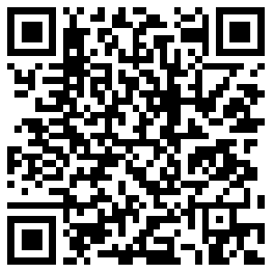
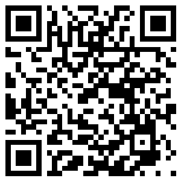
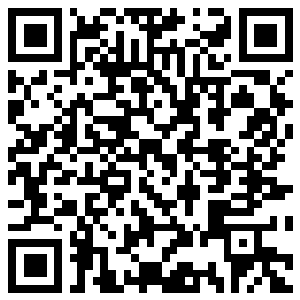
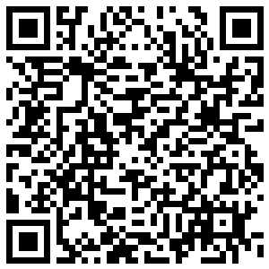
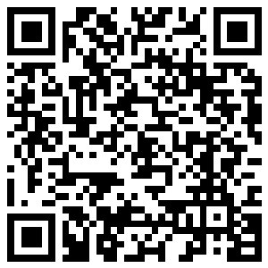

Unidad 1 - Tema 3
Modelos de retención de talento humano integrados a la gestión del desempeño
Retener talento en 2026 significa diseñar experiencias laborales sostenibles donde el bienestar y el rendimiento avancen en paralelo.
🎯 Propósito formativo
Este tema profundiza en modelos de motivación y en cómo la gestión del desempeño se convierte en un motor de desarrollo profesional. El especialista aprenderá que el salario ya no es el único factor diferenciador; pesan más el propósito, la flexibilidad laboral y el "salario emocional". Se aborda la integración entre el compromiso afectivo, la evaluación continua y el bienestar integral como palancas de retención sostenible.
Ruta estratégica
El modelo de retención y gestión del desempeño
Motivación
Factores intrínsecos: reconocimiento, crecimiento y propósito (Herzberg).
Compromiso
Compromiso afectivo como ancla emocional frente a la rotación.
Feedback 360°
Visión múltiple del desempeño para fortalecer la autopercepción.
OKRs
Alineación ágil de objetivos individuales y de negocio.
Bienestar
Presencialidad estratégica, desconexión digital y beneficios a la carta.
Pregunta central
¿Cómo diseñar modelos de retención que integren bienestar emocional, gestión del desempeño y flexibilidad laboral?
La pregunta orienta la reflexión sobre experiencias laborales sostenibles donde rendimiento y bienestar avanzan juntos.
Enfoque
Motivación (Herzberg), compromiso afectivo (Meyer & Allen), evaluación 360° y OKRs, bienestar integral en trabajo híbrido.
Se articulan modelos de retención, sistemas de desempeño y estrategias de bienestar para el contexto laboral 2026.
Producto esperado
Capacidad para diseñar planes de retención, sistemas de evaluación 360°/OKRs y estrategias de bienestar en modelos híbridos.
El especialista aplicará modelos de motivación, diseñará OKRs y propondrá presencialidad estratégica y desconexión digital.
Objetivos de aprendizaje
🎯 Metas del Tema 3
Al finalizar este tema, el especialista será capaz de analizar la motivación intrínseca y el bienestar emocional como palancas de retención, diseñar sistemas de evaluación del desempeño de 360° y OKRs, y proponer estrategias de presencialidad estratégica y desconexión digital para modelos de trabajo híbrido.
Analizar
El impacto de la motivación intrínseca y el bienestar emocional en la reducción de la propensión a la rotación.
Diseñar
Sistemas de evaluación del desempeño de 360 grados y OKRs que fomenten el crecimiento y la autopercepción del colaborador.
Diseñar
Estrategias de "presencialidad estratégica" y desconexión digital para los modelos de trabajo híbridos del 2026.
Contenido desarrollado
📚 Tres partes fundamentales
Este tema se estructura en tres partes que abordan los modelos de retención y motivación, la gestión del desempeño mediante Feedback 360° y OKRs, y el bienestar integral como ventaja competitiva para el trabajo híbrido en 2026.
"El salario ya no es el único factor diferenciador; pesan más el propósito, la flexibilidad laboral y el salario emocional."
— Enfoque contemporáneo de retención y bienestar organizacional
🔄 Pilares de la Retención y el Desempeño
Pasa el cursor sobre cada tarjeta para ver el detalle.
Motivación
Motivación
Factores intrínsecos de Herzberg que impulsan la retención.
Compromiso
Compromiso
Compromiso afectivo (Meyer & Allen) que reduce la intención de rotación y fortalece la identidad laboral.
Feedback 360°
Feedback 360°
Evaluación que integra múltiples perspectivas para mejorar la autopercepción e identificar alto potencial.
OKRs
OKRs
Objectives and Key Results para alinear objetivos individuales con los de negocio de forma ágil.
Bienestar
Bienestar
Presencialidad estratégica, desconexión digital y beneficios a la carta según etapa de vida.
📖 Desarrollo Temático
Práctica
🎯 Actividades de Aprendizaje
Dos actividades interactivas para aplicar los conceptos de motivación (Herzberg), gestión del desempeño con OKRs y bienestar integral en el trabajo híbrido.
Motivación vs. Higiene
Según la teoría bifactorial de Herzberg, algunos factores generan satisfacción y motivación real (motivacionales), mientras que otros solo evitan la insatisfacción si están ausentes (higiénicos). Clasifica cada factor.
Empareja el OKR
Cada Objetivo cualitativo debe ir acompañado de su Resultado Clave medible. Haz clic primero en un Objetivo y luego en el Resultado Clave que mejor lo mida.
Objetivos
Resultados Clave
Autoevaluación
✅ Cuestionario del Tema 3
Responde las 4 preguntas sobre modelos de retención de talento, compromiso organizacional, bienestar laboral, feedback 360° y OKRs. Al finalizar podrás ver tu puntaje y revisar tus respuestas.
Pregunta 1
1/4Autoevaluación completada
Puntaje: 0/4
Recursos
📦 Herramientas y metodologías
Plantillas y guías descargables para aplicar lo aprendido: evaluación 360°, OKRs, encuesta de clima laboral y plan de bienestar. Haz clic para acceder o escanea el QR con tu celular.
Plantilla Evaluación 360°
Formato en Excel descargable para realizar evaluaciones de desempeño 360° con autoevaluación, jefe, pares y subordinados.
Descargar plantilla
Plantilla de OKRs
Plantilla gratuita en Excel, PDF y Google Sheets para definir objetivos, resultados clave y dar seguimiento al progreso.
Descargar plantilla
Encuesta de Clima Laboral
Plantilla en Excel con 100 preguntas filtrables para evaluar satisfacción, ambiente y bienestar del equipo.
Descargar plantilla
Kit de Bienestar Laboral
Kit de Runa HR con formatos editables para diagnosticar, implementar y dar seguimiento al bienestar organizacional.
Descargar kitBibliografía
📖 Referencias bibliográficas
Escanea el QR o usa los enlaces para acceder directamente a cada referencia.
Meyer, J., & Allen, N. (1997).
Commitment in the Workplace: Theory, Research, and Application.

Escanear


Escanear